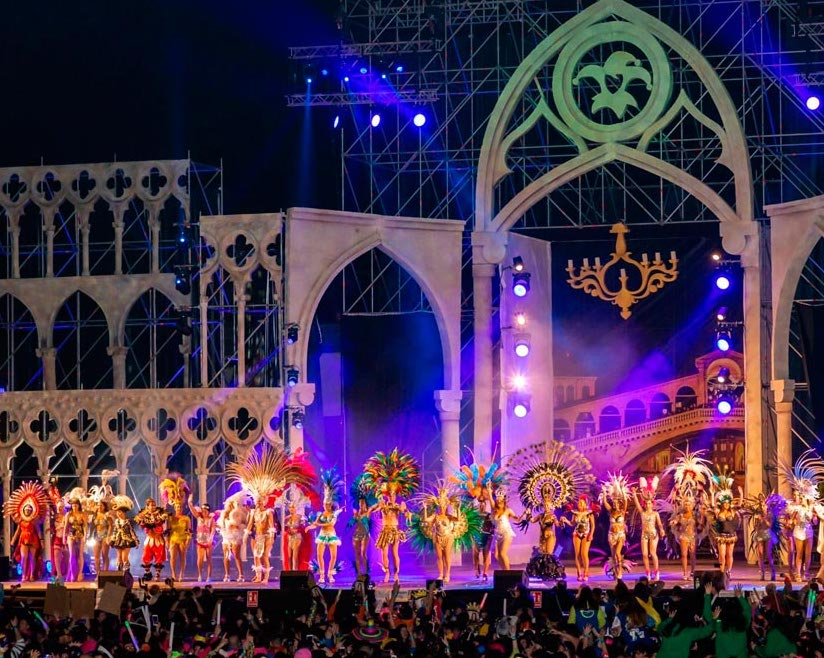

Gala de las Reinas
El carnaval comienza con los estandartes, pero para mí, la gala de presentación de las reinas es donde realmente empieza, con sus carrozas en un escenario tematizado para el carnaval de ese año.
Vinaroz y su carnaval
El carnaval comienza con los estandartes, pero para mí, la gala de presentación de las reinas es donde realmente empieza, con sus carrozas en un escenario tematizado para el carnaval de ese año.
El Carnaval de Vinaroz tiene una larga tradición llena de color y alegría, donde la comunidad se reúne para celebrar con pasión y creatividad.
Desde la gala de las reinas hasta los desfiles, el carnaval cuenta con una serie de eventos que ofrecen diversión para todas las edades.